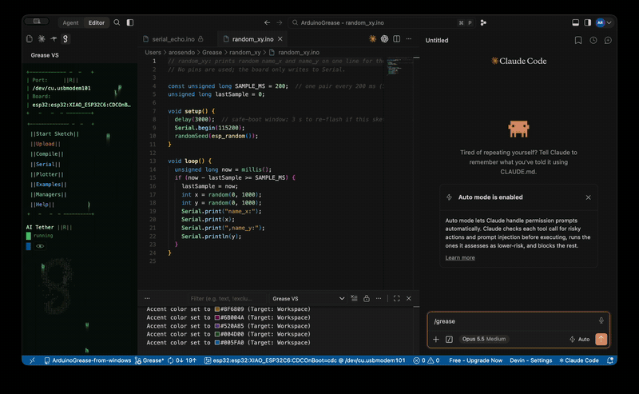
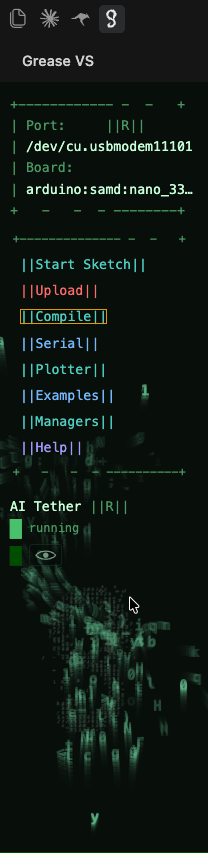
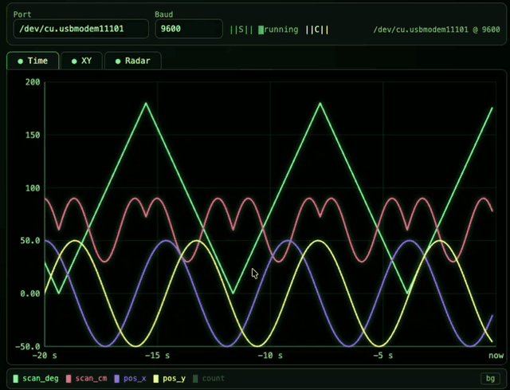
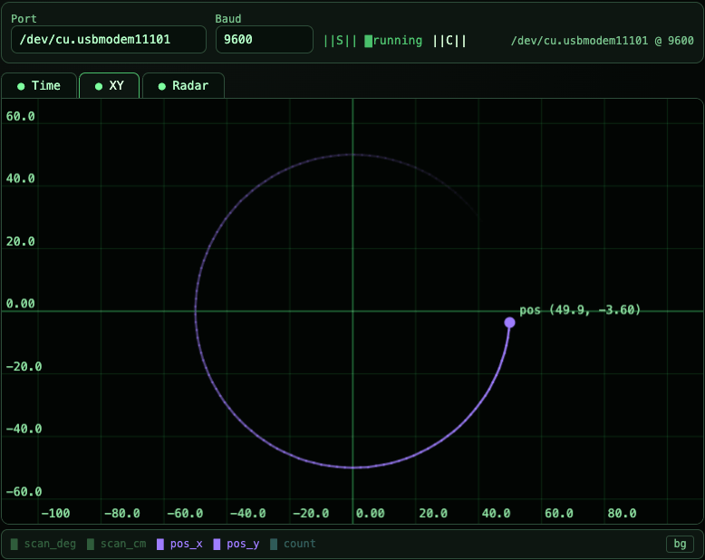
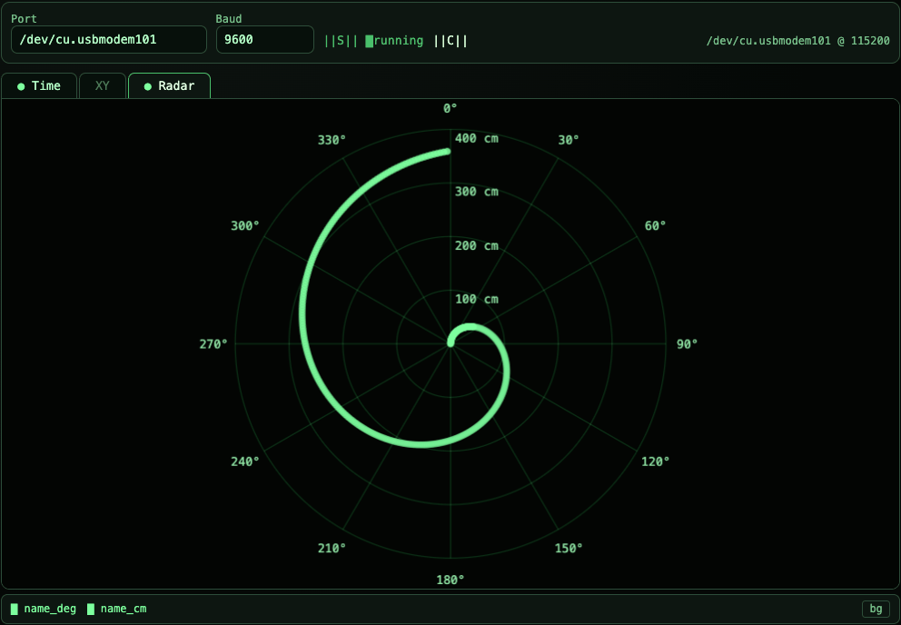
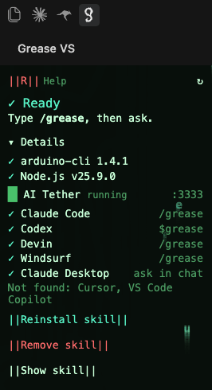
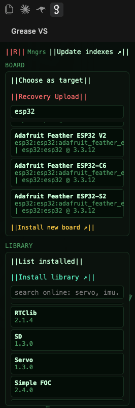
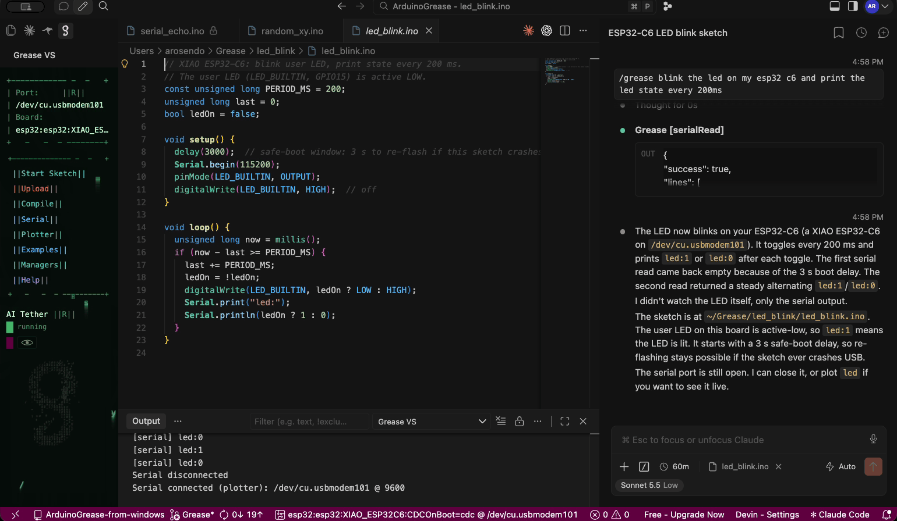

Grease is a software to build microcontrollers and robots capable of debugging themselves. From LED blinking to Reinforcement Learning experiments, this is an all-in-one solution for your problems.

Grease treats English as the programming language. The more technical and precise your request, the more the agent can build: wiring help, sensor checks, behavior tuning, Bluetooth protocols, inverse kinematics.
AI agents write, compile and upload your sketch, then read the board's serial output; you watch the same output and plots in the sidebar.
Works inside
Boards
Agents outside the editor (Claude Code, Codex, Claude Desktop) connect to the same board through Grease's local AI Tether.

The agent reads the same numbers you see. Print name_x + name_y for XY, or name_deg + name_cm for Radar (0° up, clockwise).




AI Tether runs on your computer and gives any agent the tools: compile, upload, Serial, Plotter, installs.
Use any agent you like: Copilot, Claude, Codex, Cursor, Windsurf. In the Grease VS sidebar open Help, press Add tools for your agent, restart it, then type /grease. The agent reads the Grease Skill and knows what to do.

Board cores and libraries install from the Managers panel, or the agent installs them when a sketch needs one. arduino-cli installs by itself.
Grease goes online only to install. Each install shows a pop-up. Everything else stays offline.
/grease in your agent ($grease in Codex), then ask: "blink the LED on my ESP32-S3".
This was inspired by my work in 2015 on the "Mother Robot" a system that could build and improve its own "children."
The robots couldn't effectively see what was happening in the real world, relying on us to be their sensors and set goals. Now they can debug themselves, while we concentrate on setting their goals.
"If mechanical engineers are the knights, and computer scientists are wizards, then we roboticists are the paladins."
Designing algorithms is getting easier, and the next frontier is practical/experimental. The real Robotics' bottleneck is where code meets metal.